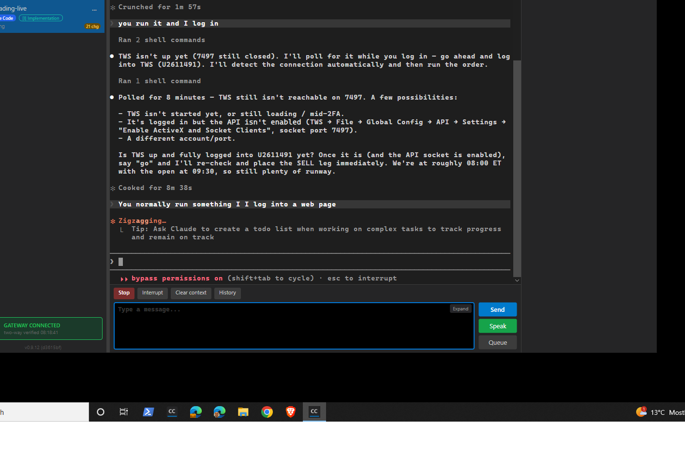
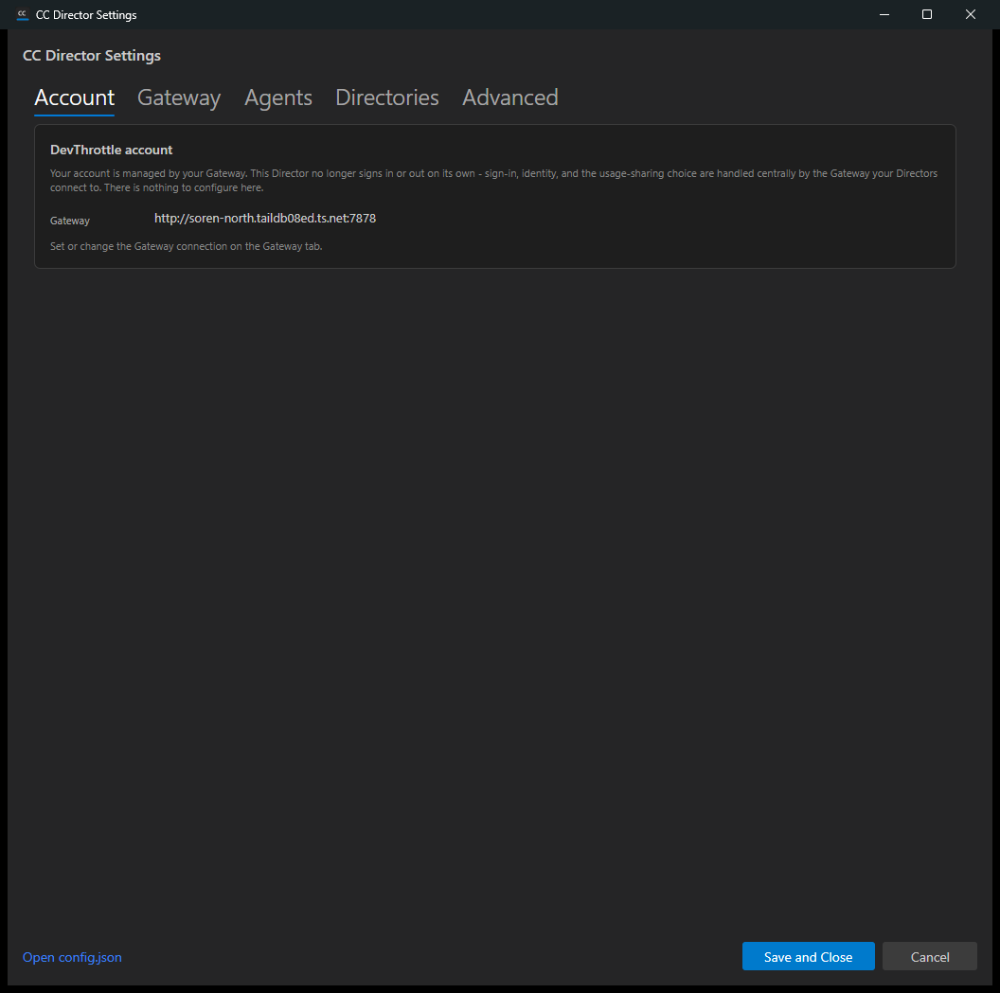

Title: [Desktop] Unblock Director startup: boot without the Director's own DevThrottle login gate (interim ahead of #641/#651)
Pull request: #665 (branch issue-664-unblock-startup-gate, HEAD 8e9c63b)
Verified by: QA Agent - independent verification in a fresh git worktree (devthrottle-wt-664), isolated slot 14, launched via the cc-director14-launch scheduled task with NO local DevThrottle credential present.
Date: 2026-06-22
D:\ReposFred\devthrottle-wt-664 on the PR branch, HEAD == origin (8e9c63b), clean tree.local_builds\cc-director14.exe.cc-director14-launch (CLAUDE.md rule 0b), PID 9076, Control API port 7894.%LOCALAPPDATA%\cc-director\config\director\devthrottle-credential.bin ABSENT, so IsLoggedIn() is false.GET /healthz returned {"status":"ok","directors":1,...,"version":"0.9.13"} - the Director is alive and running normally.| # | Criterion | Expected | Actual (my evidence) | Result |
|---|---|---|---|---|
| 1 | No-credential Director boots to the MAIN WINDOW, no sign-in prompt, no browser sign-in. | Main window shown; gate decides Start with loggedIn=False. | Director log lines (PID 9076):[AccountGatePolicy] Decide: loggedIn=False, decision=Start (interim ... issue #664)[CcDirector] Account startup gate decided Start ... showing the main window[CcDirector] Main window shown; starting background session validation nextMain window screenshot captured (live session UI: Stop/Interrupt/History/Send, GATEWAY CONNECTED). |
PASS |
| 2 | No startup path opens a devthrottle.com browser sign-in; first-run consent does not block startup. | No AccountGateScreen / loopback / FirstRunConsent / devthrottle.com in the startup path. | Grep of the full PID-9076 launch log for AccountGateScreen|loopback|FirstRunConsent|devthrottle.com returned ZERO matches. Code: App.axaml.cs removed the Block branch and the ShowFirstRunConsentIfNeeded startup call entirely. The dead ReturnToGateAfterLogout / OnFirstRunLoginComplete methods (which still reference AccountGateScreen) have NO caller in the startup path (full removal is #651). |
PASS |
| 3 | Settings -> Account is a read-only "managed by your Gateway" panel with no broken sign-in/logout/consent controls. | Static read-only panel; no Log out, no telemetry toggle, no identity card. | UI Automation on the running Settings window:GatewayManagedUrlText present = True (value http://soren-north.taildb08ed.ts.net:7878);LogOutButton present = False; TelemetryEnabledCheck present = False; AccountEmailText present = False.Screenshot shows the read-only "managed by your Gateway" text and the Gateway URL, no controls. |
PASS |
| 4 | dotnet build cc-director.sln is clean (no dead-reference warnings). |
0 Warnings, 0 Errors. | dotnet build cc-director.sln -c Debug -> Build succeeded. 0 Warning(s) 0 Error(s). |
PASS |
| 5 | AccountGatePolicyTests updated: missing-credential install decides Start (not Block); existing suites pass. | Tests assert Start for missing/tampered credential; suites green. | Read the tests: Decide_NoStoredCredential_ReturnsStart and Decide_TamperedCredential_ReturnsStart both Assert.Equal(GateDecision.Start, policy.Decide()). Ran: AccountGatePolicyTests 8/8 pass; full Core Account suite 83/83; Avalonia 82/82. |
PASS |
The change did NOT attempt: the Gateway-verified gate (#641), live identity from /account/status (#638 - the Account tab explicitly does not call it), credential-blob deletion / telemetry Bearer removal (#642), or the full account-surface removal (#651). The account/credential types are left present and compiling but no longer gate startup. In scope.
Main window reached with no DevThrottle credential:

Settings -> Account read-only "managed by your Gateway" panel:
